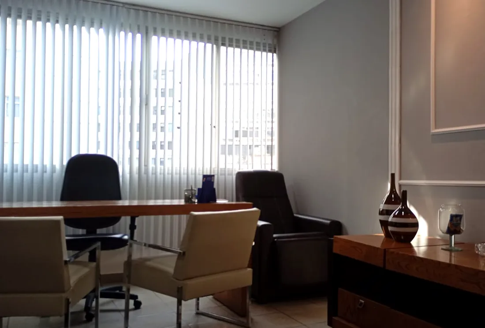

Advocacia criminal em Vitória/ES
Defesa criminal técnica em cada etapa do processo
Atuação em inquéritos, prisões em flagrante, audiências e recursos, com acompanhamento direto da advogada e sigilo absoluto.
Áreas de atuação
Toque em uma área para ver como a defesa atua.
Inquérito policialAcompanhamento em depoimentos e defesa na fase de investigação.
Se você foi intimado ou está sendo investigado, a defesa já pode atuar: acompanhar o depoimento na delegacia, ter acesso ao que já foi apurado e apresentar documentos e testemunhas antes de o caso chegar à Justiça.
Falar sobre isso no WhatsAppPrisão em flagrantePedido de liberdade provisória e relaxamento de prisão ilegal.
A defesa confere se o flagrante seguiu a lei e pede a liberdade provisória ou o relaxamento da prisão, quando cabível. Quanto antes a advogada for chamada, mais opções existem.
Falar sobre isso no WhatsAppHabeas corpusMedidas contra prisões e constrangimentos ilegais.
Usado quando alguém está preso ou ameaçado de prisão de forma ilegal. Pode ser pedido em qualquer fase do processo e em qualquer tribunal.
Falar sobre isso no WhatsAppTribunal do JúriDefesa em processos por crimes dolosos contra a vida.
Homicídio e outros crimes dolosos contra a vida são julgados por jurados. A defesa atua desde a fase de provas até a sessão de julgamento em plenário.
Falar sobre isso no WhatsAppCrimes econômicosEstelionato, crimes tributários e lavagem de dinheiro.
Defesa em investigações e processos por estelionato, crimes contra a ordem tributária e lavagem de dinheiro, com análise detalhada de documentos e movimentações financeiras.
Falar sobre isso no WhatsAppExecução penalProgressão de regime, livramento condicional e remição.
Acompanhamento de quem já cumpre pena: cálculo da pena, progressão de regime, livramento condicional, remição por trabalho ou estudo e saídas temporárias.
Falar sobre isso no WhatsAppAudiência de custódia
Toda pessoa presa em flagrante deve ser apresentada a um juiz em até 24 horas. Nessa audiência, a defesa verifica se a prisão foi legal, se houve abuso e pede que a pessoa responda ao processo em liberdade. Acompanhamento presencial, com plantão para atender a família assim que a prisão acontece.
Um familiar foi preso agora
Rafaella Cazelli
Advogada criminalista formada pela Doctum Vitória. Acredita que toda pessoa tem direito a uma defesa técnica, atenta e feita com sigilo, e que o cliente e a família precisam entender cada etapa do processo sem juridiquês.
Dúvidas comuns
Um familiar foi preso. O que eu faço?
Mande pelo WhatsApp o nome completo da pessoa e onde ela está. A prisão em flagrante deve passar por audiência de custódia em até 24 horas, e é importante ter advogado já nesse momento.
Fui intimado para depor. Preciso de advogado?
É recomendável. Com um advogado presente, você entende o motivo da intimação antes de falar e garante que seus direitos sejam respeitados, inclusive o de permanecer em silêncio.
O atendimento é sigiloso?
Sim. Tudo o que você conta à advogada é protegido pelo sigilo profissional, desde a primeira mensagem.
Como são definidos os honorários?
Seguem a tabela da OAB do seu estado e são combinados por escrito antes de qualquer serviço começar.